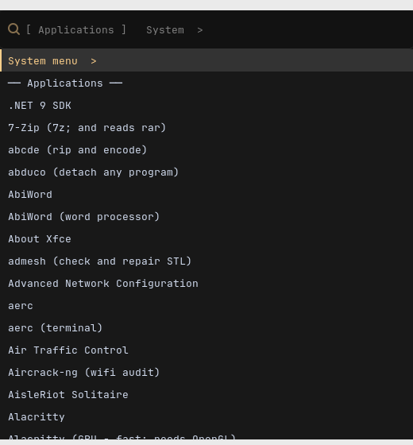

Server
No screen attached.
The base system made persistent, compressed RAM swap, your SSH key, the
partition grown into the disk, then root handed over to doas.
Nothing graphical at all.
Any board
One installer turns stock Alpine into a finished desktop — on a Raspberry Pi, a PC, or a virtual machine on your Mac — in eighteen stages you can re-run in any order.
Copal is tree resin caught halfway to amber: hardened, but not yet stone. Alpine boots diskless — its root filesystem is a RAM disk that evaporates at power-off — and Copal is what sets it on the disk without giving up the smallness that made it worth booting.
./copal build vm
./copal card pi4
One command on your Mac. It asks what you are building, shows the consequences, and writes an SD card, a UEFI disk image or a virtual machine.

It works: hover a category, hover a program to see what it opens to, click to start it, type to search, right-click for favourites. Esc clears the search, then closes the menu; the bar's ≡ opens it again. The entries, icons and pictures are the real menu's and the gallery's; the wallpaper is Linux Antiquity's (MIT).

copal-menu, on
Super+Space: every program in one list on the left, the categories, the
settings, the session and an Install branch on the right — two panes,
never more than two levels deep, and it lists the terminal programs a
launcher cannot see.It plays itself until you point at it. Then: type to filter, ↑ ↓ to move, ← → to cross between the panes or go back, Enter to run. A terminal program with no picture links to its page in the command reference.
Copal is an opinionated desktop, decided once so you do not have to: a tiling Wayland compositor, a theme drawn from old scientific illustration, a menu for the mouse and a launcher for the keyboard, a toolchain with an AI agent in it, and a shelf of programs chosen because they are good — each with two sentences saying what it is. The desktop →
No screen attached.
The base system made persistent, compressed RAM swap, your SSH key, the
partition grown into the disk, then root handed over to doas.
Nothing graphical at all.
Any board
X11 and i3, on the framebuffer.
The tiling desktop that fits a Pi Zero: X rendering on the CPU, i3, a terminal, the catalogue, emulators and the toolchain. The ceiling for the smallest boards.
Every board, 512 MB and up
Hyprland, themed as Linux Antiquity.
Everything above, then a GPU-composited Wayland desktop, Copal Apps, and thirteen more programs installed at the first login while a slideshow shows each one arriving.
aarch64 and x86_64
Nine targets, one script. The Raspberry Pi boards are written as SD cards that the Pi's own firmware boots; everything else is a UEFI disk, and on a Mac with Apple Silicon a UTM virtual machine runs the ARM build at native speed. Every platform, and what has been tested on it →
| Target | Architecture | What it is |
|---|---|---|
| zero | armhf | Pi Zero, Zero W, Pi 1 — the board this was written for |
| pi2b | armv7 | Pi 2 B v1.1 |
| zero2 | aarch64 | Pi Zero 2 W, Pi 3, CM3 |
| pi4, pi5 | aarch64 | Pi 4, Pi 400, CM4, Pi 5 — the boards with power to spare |
| pc | x86_64 | any UEFI PC or laptop, or an Intel Mac |
| pc32 | x86 | 32-bit UEFI machines |
| vm | aarch64 | UTM on Apple Silicon — native speed |
| vmx86 | x86_64 | UTM emulating a PC on Apple Silicon |
You answer a handful of questions on your Mac, boot the result, pick a level, and walk away. Every program Copal puts on the machine is a playbook — one file per project, with its prerequisites, its steps and its two sentences — and every install is recorded, so what happened can be read afterwards rather than guessed at. The installer →
Alpine Linux is small, simple and secure: musl libc, BusyBox, OpenRC and
the apk package manager — by Alpine's own count, a minimal
install to disk needs about 130 MB. Copal downloads stock Alpine, checks it against Alpine's own
published checksum, and builds on it with Alpine's own tools. It is not a
fork, and nothing in it is a binary you have to trust.
Why Alpine →
Copal Apps, the menus, the clipboard bridge, a fleet console for a room of machines, a Geiger counter's instrument panel, a task manager in one terminal window — and a gallery of 203 programs photographed running on it. The software →
Every terminal command on a Copal machine, in one searchable page: what it
is, why it is here, the package it came in, working examples, the options
that matter and the parts people get wrong — with its full man page a click
away, because Copal puts man back on Alpine.
The Terminal Guide →